3D for people who already know pixels
Everything we did to turn neon-caster's sprites into 3D models with pixelmon, and the handful of ideas you need to understand it. Every picture on this page comes from your own crate, railgun and monsters.
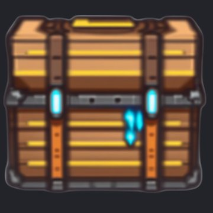
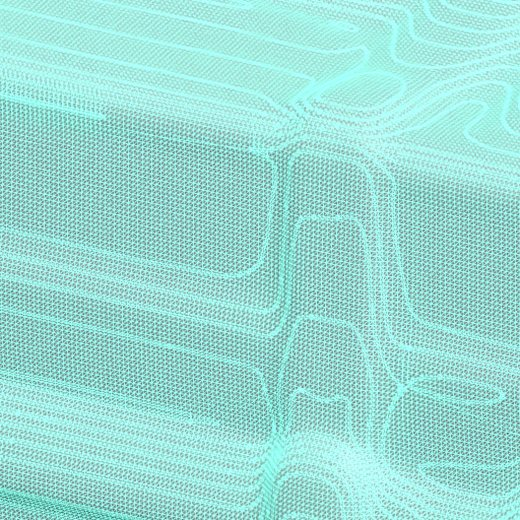
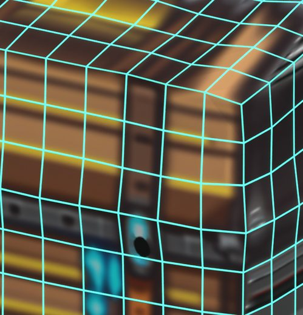
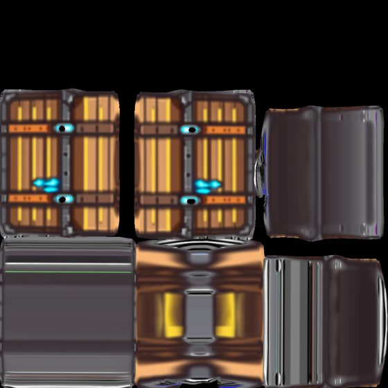
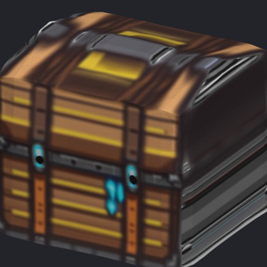
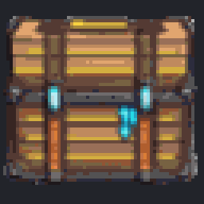
Read it top to bottom once. After that, the glossary at the end is the quick reference.
What a 3D model is made of
A 3D model is a mesh: a hollow skin made of flat pieces, like a papercraft model. There is nothing inside it. It's built from three things, each made of the one before.
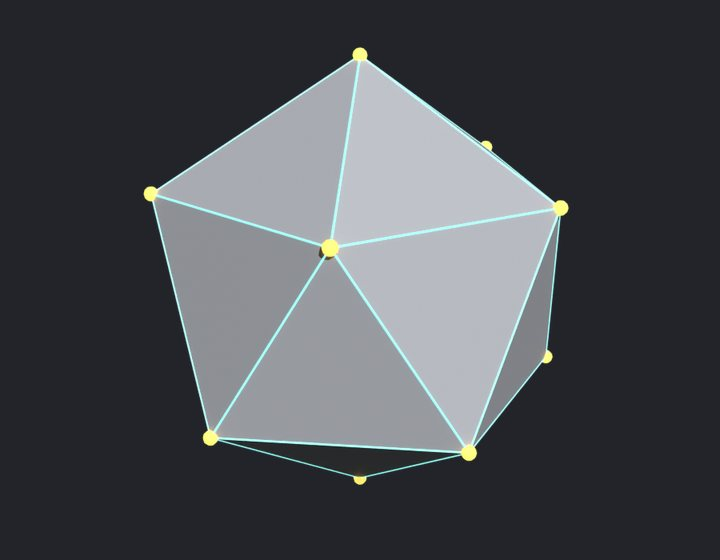
- Vertex plural: vertices
- A point in space: three numbers, x, y and z. The only thing a mesh really stores positions for.
- Edge
- A straight line joining two vertices.
- Face polygon
- A flat panel closed in by edges. Faces are what you see and what gets coloured.
Pixel art thinks in a grid of squares. 3D thinks in this net of points. A poly count is just how many faces a model has, and it's the 3D cousin of sprite size: more faces, more detail, more work for the computer.
To see a model's counts, open it in Kaleidotron: its 3D view has a Stats box with objects, vertices, edges, faces and triangles, like Blender's Statistics overlay (Overlays › Statistics), and 🧊 Open in 3D editor hands the model on to Blender, imported and framed. For a sense of scale, neon-caster's ammo pack:
| Model | Vertices | Triangles |
|---|---|---|
| straight from the AI | 73,730 | 149,312 |
| HD (smooth) | 5,838 | 11,672 |
| low-poly (faceted) | 486 | 968 |
Kaleidotron also shows GPU vertices, which is higher: a game engine copies a vertex wherever its UV or shading changes, at seams and hard edges. The low-poly ammo has 486 vertices but uploads 1,933.
3D space: X, Y and Z
Every vertex is placed with three numbers: how far along the X axis, the Y axis and the Z axis it is, measured from the origin (0, 0, 0). In Blender and most 3D apps the axes are always drawn in the same colours: X red, Y green, Z blue. RGB is XYZ, which makes them easy to remember.
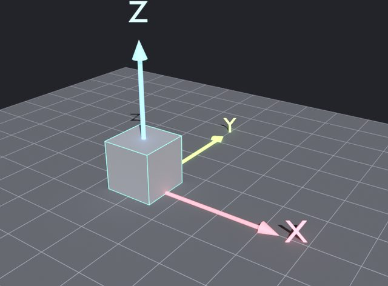
The catch is which way is up. Blender says Z is up: X and Y lie flat on the floor. glTF, game engines like Unity and Godot, and most file formats say Y is up and Z points at you. Neither is wrong; they just disagree. Blender converts when it imports and exports, which is why our .glb files stand upright everywhere. If a model you load ever lies on its back, a mixed-up "up" axis is the reason, and most importers have an Up axis option to fix it.
Every object also has its own local axes that turn with it, as opposed to the world's global axes. "Move forward along its own Y" and "move north" are different things once an object is rotated.
Move, rotate, scale
The three basic transforms. They change where an object is, which way it faces and how big it is, without touching its shape. Each object stores them as numbers: a location, a rotation and a scale, all in X, Y and Z. Every object also has an origin: the point it moves from, turns around and scales from.
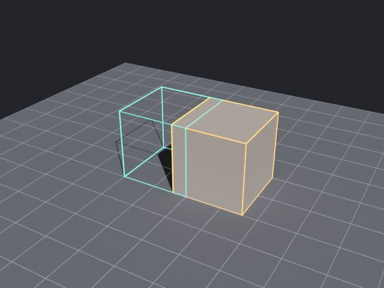
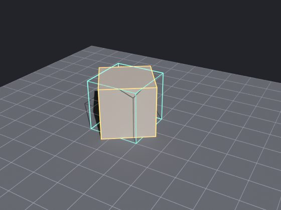
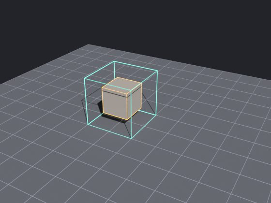
The teal outline is where the cube started; the orange one is where it ended up. In Blender, press the key, then optionally an axis letter to lock it to that axis, then a number. G X 2 Enter moves 2 units along X; R Z 90 turns 90° around Z. Apply transforms (Ctrl+A) bakes them into the shape and resets the numbers. Our scripts do this before measuring a model.
Modeling operations
Shapes are built by editing a mesh directly, in Edit Mode (Tab): pick vertices, edges or faces and apply an operation. These five do most of the work. Orange marks what the operation made.
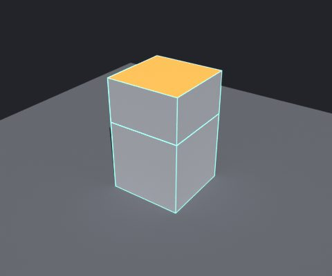
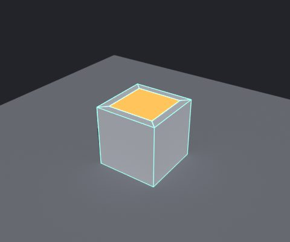
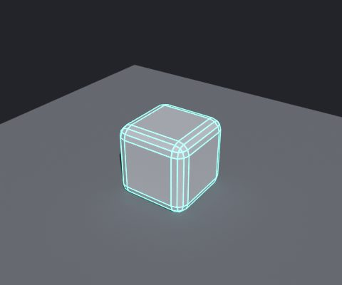
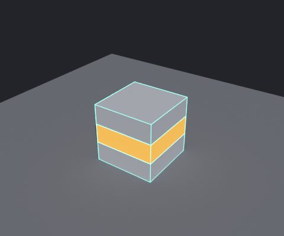
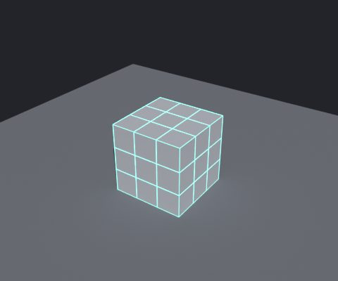
| Operation | Key | What it does |
|---|---|---|
| Merge | M | Weld selected vertices into one. |
| Fill | F | Make a face from selected vertices or edges; closes a hole. |
| Knife | K | Draw cuts across faces by hand. |
| Delete | X | Remove vertices, edges or faces. |
| Duplicate | Shift+D | Copy what's selected, then move the copy. |
| Recalculate normals | Shift+N | Point every face outwards again. Fixes faces that render inside out. |
Each has its page in the Blender manual's mesh editing chapter.
Modifiers and booleans
A modifier changes a shape without destroying the original. It sits on top of the mesh like a filter on a layer, so you can tweak it or switch it off any time, and apply it when you want the result made permanent. Our pipeline used several: Remesh, Decimate, Wireframe and Boolean.
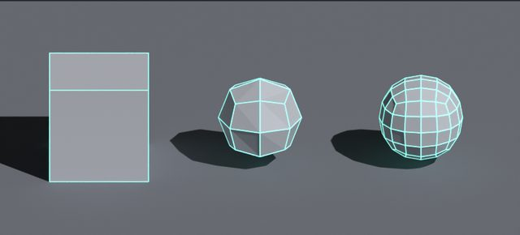
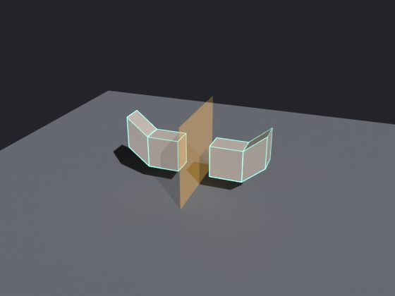
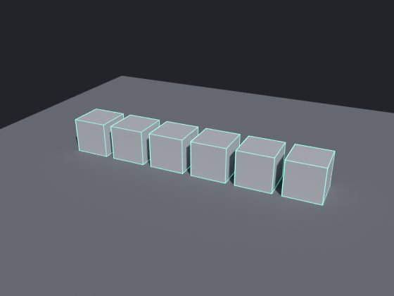
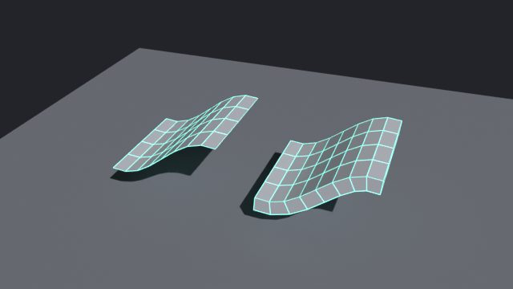
Booleans
A boolean combines two shapes the way you'd combine selections in a paint program. One shape is the target; the other is the cutter.
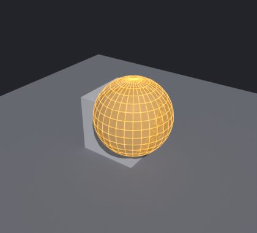
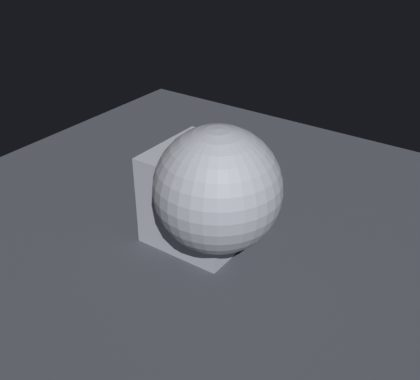
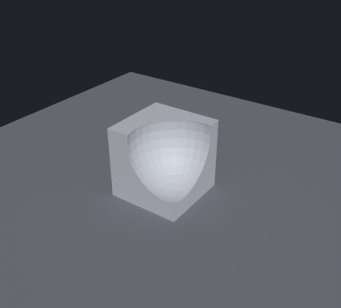
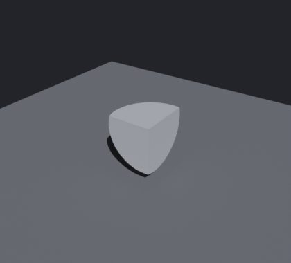
Booleans are quick for hard-surface things (holes, vents, sockets), but they leave messy topology: long thin faces and n-gons where the shapes meet, much like decimation. Both shapes also need to be closed (manifold), or the result comes out broken. Clean up afterwards, or retopologise.
More in the manual: modifiers, the Boolean modifier.
Triangles, quads and topology
A face can have any number of corners, but two shapes matter. A triangle has three corners and is always perfectly flat, which is why graphics cards draw everything as triangles in the end. A quad has four corners and is what artists model with, because quads line up into tidy rows and columns.
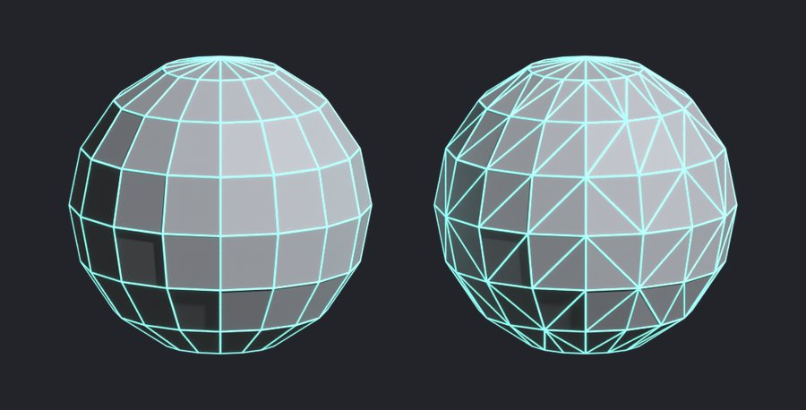
Topology is how those faces are arranged: where the edges run, how big the faces are, and whether they follow the shape. Good topology has even, mostly four-sided faces in rows (edge loops) that run along the shape, like the barrel of a gun. It doesn't change the silhouette much, but it makes everything after it easier: texturing, editing, animating, and even how light falls on the surface.
Why your railgun looked strange
The AI model (Hunyuan3D) builds a shape out of hundreds of thousands of tiny triangles with no plan at all. That's called a triangle soup. To make the low-poly version I first used decimation, which deletes edges until the count is low enough. Decimation only cares about keeping the outline, so it leaves long thin sliver triangles and random groupings.
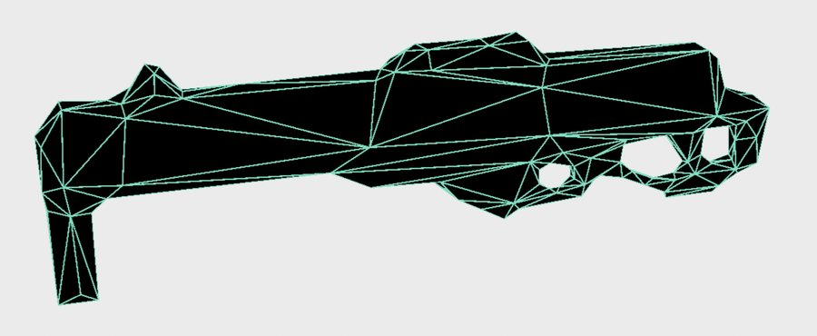
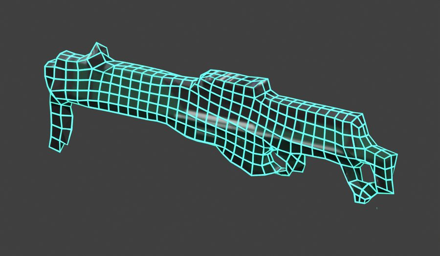
Retopology means rebuilding a mesh's faces on top of its existing shape. Artists do it by hand. QuadriFlow, built into Blender, does it automatically: it covers the shape in evenly sized quads that line up with its curves. It gets you most of the way. It won't give you dead-straight hard edges or perfect detail around small holes; that's still careful hand work.
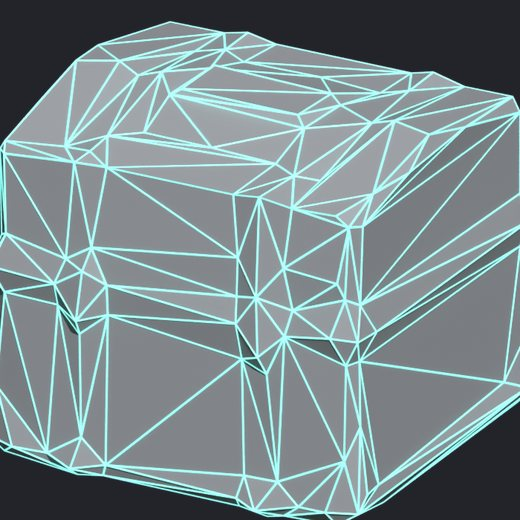
The triangle catch. The .glb and .gltf formats can only store triangles, so every quad gets saved as two triangles with a diagonal across it. Open the clean crate in Kaleidotron and you'll see neat pairs of triangles like this, not slivers. In Blender, select everything in Edit Mode and press Alt+J (Tris to Quads) to get the quads back.
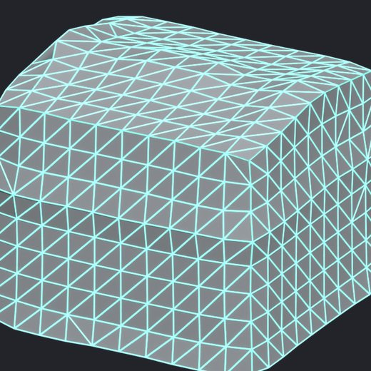
Shading, normals and the low-poly look
Every face has a normal: an invisible arrow pointing straight out of its front. The renderer uses normals to decide how bright a face is, by comparing where it points with where the light comes from. Normals also decide which side is the outside.
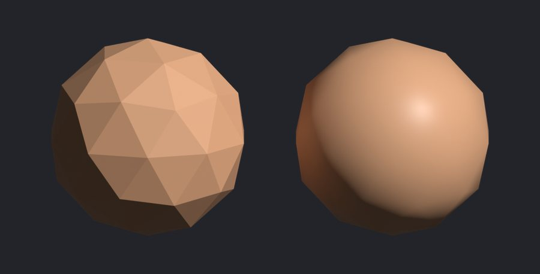
That's the whole low-poly style: few faces + flat shading. High-poly is the other way round, thousands of faces, smooth shading and fine detail. In our neon-caster set, the 64 px sprites come from low-poly models and the HD sprites from high-poly ones.
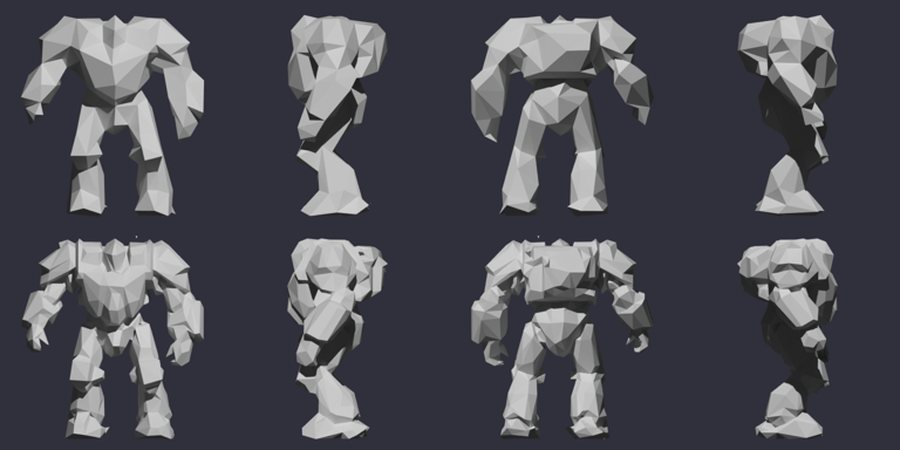
| What | Faces | Used for |
|---|---|---|
| Hunyuan3D's raw model | 130,000 – 490,000 | Starting shape only. Far too dense to edit or texture. |
| Low-poly model | ≈ 500 quads | The 64 px sprites. Texture sheet 1024 px. |
| High-poly model | ≈ 6,000 quads | The HD sprites. Texture sheet 2048 px. |
| A PlayStation 1 character, for scale | 300 – 1,000 | The classic low-poly era. |
UVs: wrapping a flat picture around a shape
A texture is an ordinary image, a PNG you can paint in DRAW, that gets wrapped around a model as its skin. To know which part of the image goes where, every corner of every face gets a UV coordinate: a spot on the image. They're called U and V simply because X, Y and Z were already taken by 3D space. U is across the image, V is up it.
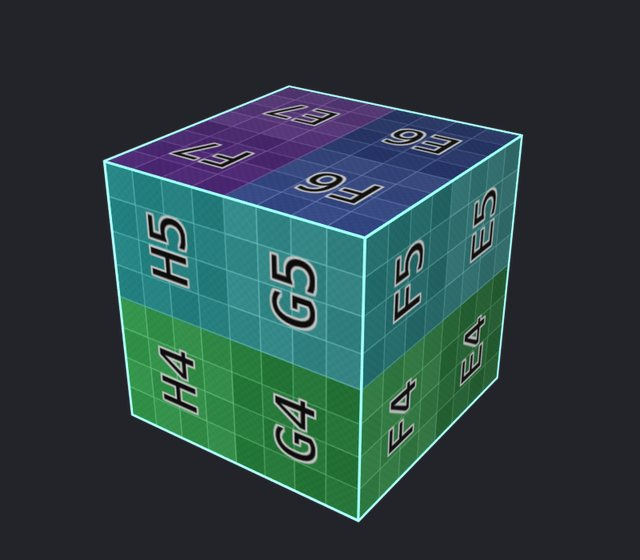
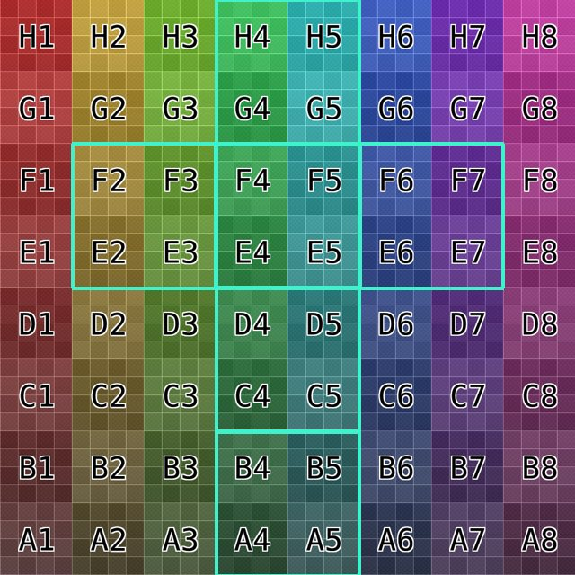
UV unwrapping is unfolding the model onto the image, like flattening a cardboard box or peeling an orange. The cuts are called seams, and each piece that lies flat is an island. A good unwrap has few seams in visible places and islands that keep their shape without stretching. We used Smart UV Project, which cuts wherever the surface bends sharply.
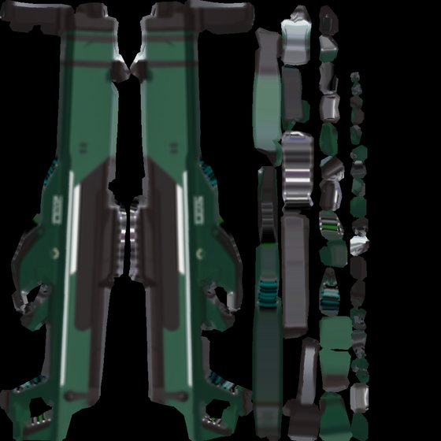
Painting it. Open NAME_texture.png in DRAW and paint straight onto the islands. Don't move, resize or rotate anything: each pixel is pinned to a spot on the model. Black around the islands is unused space.
Projection and baking: where the colours came from
The AI model comes out as a grey shape with no colour, so the colour had to come from the original picture. Two steps did it.
- Projection. Imagine a slide projector shining the HD picture onto the grey model from the front. Every point takes the colour that lands on it. This is projection mapping. From the front it's perfect.
- Baking. Baking means recording what the model looks like onto its own UV layout, as an image. Blender looked at each spot of the clean model's islands, found which colour was projected there, and wrote it into the texture sheet. Baking also carries detail from a dense model onto a simple one: here the colours of the 133,000-face model went onto the 484-quad one.
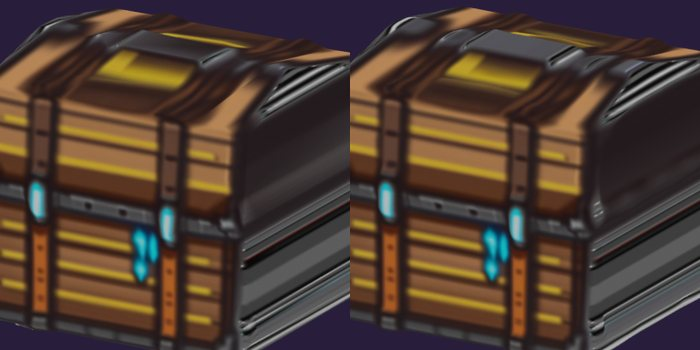
So the front of every model is accurate, and the sides and back are a best guess. Those are the islands worth repainting. Tools that paint all sides at once exist (Hunyuan3D-Paint, for example), but they need a much bigger graphics card than the RTX 3070's 8 GB.
pixelmon does all of this for you with its texture option: see 3D in pixelmon.
Model files
Your models come in two forms. Each holds the same model; they're just packed differently.
.gltf → finds NAME.bin and NAME_texture.png by name, in its own folder
That's the sidecar arrangement. Change the PNG, reopen the .gltf, and the model wears your changes. Keep the three together, and if you rename one, rename all three.
A .glb is the same three things packed into one file: easy to share or drop into a game, but you can't edit its texture in place. pack-glb.sh turns an edited .gltf back into a .glb.
| Format | Keeps | Good for |
|---|---|---|
.gltf + .bin + images | shape, UVs, materials, textures (triangles only) | Editing textures. The modern standard, often called "the JPEG of 3D" (glTF at Khronos). |
.glb | the same, in one file | Sharing, game engines, web viewers. |
.obj + .mtl | shape, UVs, simple materials; keeps quads | An old, simple format almost every program opens. |
.fbx | shape, materials, skeletons, animation | Game engines and animation (Autodesk's format). |
.stl | shape only: no colour, no UVs | 3D printing. |
Cameras, views and light
A 3D scene is turned into a picture by a camera, and making that picture is rendering. A normal, perspective camera makes far things smaller, like your eye. An orthographic camera doesn't: sizes stay true at any distance, like a technical drawing. All our sprite renders are orthographic, so a monster is the same size from every angle and lines up with the old sprites.
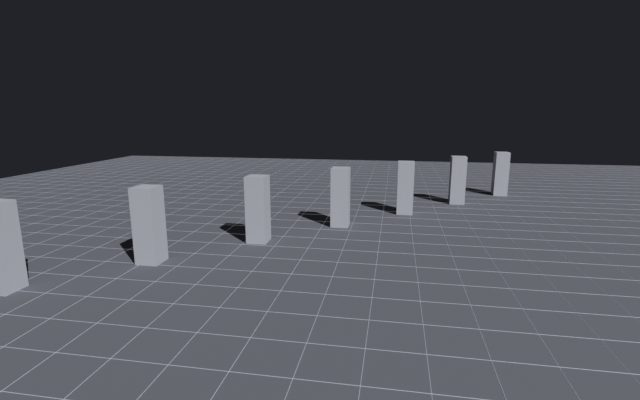
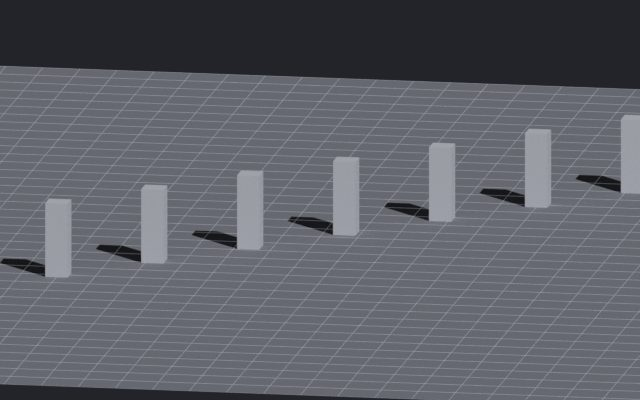
The standard views
3D apps have one-key views straight down each axis, all orthographic, plus the free user view you orbit around in. In Blender they're on the number pad.
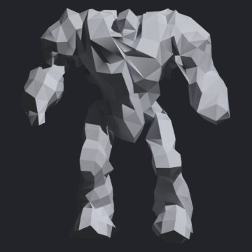
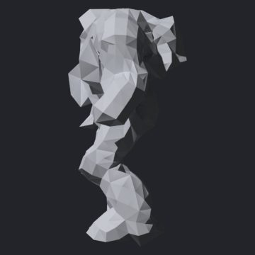
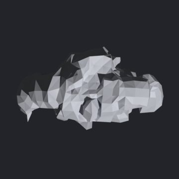
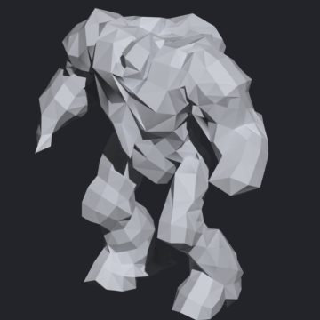
Ctrl with the same key flips to the opposite side (back, left, bottom). Numpad 5 toggles perspective and orthographic, and Numpad 0 looks through the scene's camera, which is what a render shows.
Viewport shading modes
The same model can be shown four ways while you work. In Blender, Z opens the menu, or use the four little spheres at the top right of the view.
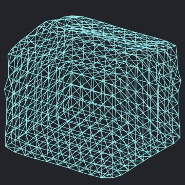
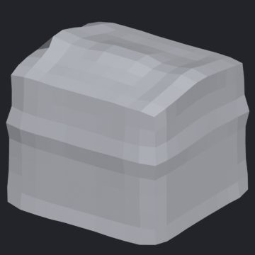
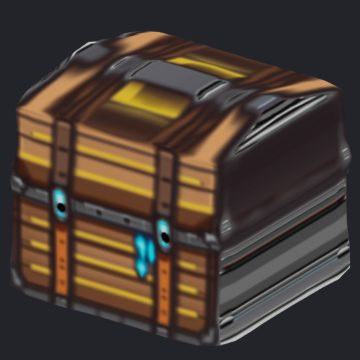
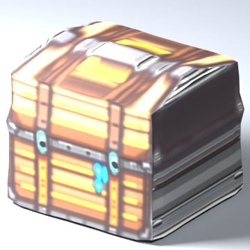
Lights
Four kinds, each with a strength and colour. A scene usually has a key light plus a soft fill or sky.
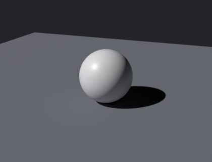
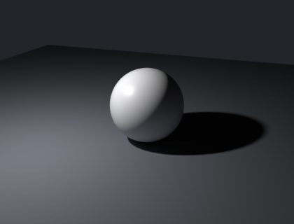
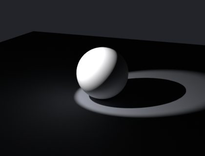
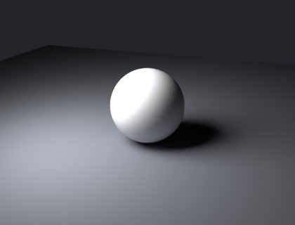
Camera height
Some neon-caster pictures look down on their subject. Hunyuan3D builds the model as it really is, so the crawler came out as a flat spider on the ground, and an eye-level camera saw it edge-on. The fix tries a few camera heights and keeps the one whose outline best matches the picture.
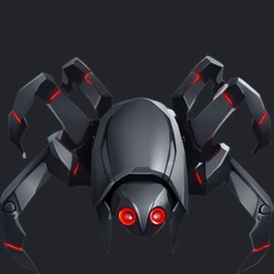
Depth maps
A depth map is a greyscale picture of distance: white is near the camera, black is far. pixelmon's depth lock hands one to the image model, which then paints a new picture with exactly that shape. A turnaround renders a model's depth from every side and paints each one, so you get matching sprites of the same thing from 8 directions.
3D in pixelmon: GUI and command line
Everything above, from a picture to a model to matching sprites, is two clicks in pixelmon-gui, or one command. These screenshots are a real run.
- Start from a good picture. Render (or pick) one of the subject alone: full body, facing the camera, on a plain background. Art mode with ✂ cut out is best. The form's other settings (palette, output size, kind) are what the sprites will use later, so set them now too.
The form. Here: EGA palette at 320 × 200, kind game sprite. - Click 🧊 on the picture, in the Gallery or the Queue. It sits in the corner of every thumbnail.
- The lightbox opens at its 🧊 3D row. Pick the options, then a button.
- make 3D model
- The picture becomes a
.glb, about a minute on the render server. - turnaround
- Model, then N matching sprites, about 50 s per angle.
- angles · camera · low-poly
- 4, 8 or 16 views; eye level, a little above, or above; off or 400 / 1,500 / 5,000 faces.
- texture
- Also a clean, textured model: the picture projected and baked into a texture you can paint. on guesses how high the picture was seen from; or pick eye level, a little above, or above.
- The model's card. It shows a 4-view preview of each model, and for each a download link (🧊 model, 🔺 low-poly, 🎨 textured), 👁 Kaleidotron, 🧊 Blender (Blender starts with the model imported and framed; 🛠 Setup › 3D editor picks another program) and 🧊 turnaround. The textured one also gets 🖌 texture.
A 3D model with low-poly 400 and texture on: three models, two previews. The same buttons in the lightbox. - The textured model. About 6,000 quads, or the low-poly count with flat shading, wearing the picture as its texture: the front is the picture, the back its colours seen through, the sides stretched.
The gunner at 400 faces, from the front, side, back and other side. Its texture, NAME_textured_texture.png: one island per part. The black is the dark armour and the gaps between islands.Paint it: click 🖌 texture to open it in DRAW, paint, save under the same name, then 👁 Kaleidotron (tick Textured) or 🧊 Blender shows your paint on the model. Those buttons open the
.gltf, which reads the PNG, so they always show the latest paint; the.glbkeeps the texture as it was made.If a picture is projected from the wrong height, the colours slide: a plant gets leaves on its pot. Pick the height by hand in the texture menu.
- 🧊 turnaround on that card makes the sprites from the model, steered by the picture it came from. Each sprite is labelled with its angle.
A 4-angle low-poly turnaround in EGA, with the form's settings applied.
The same from the command line
| In the GUI | Command |
|---|---|
| 🧊 › make 3D model | pixelmon --mesh robot.png |
| … with low-poly 400 | pixelmon --mesh robot.png --lowpoly 400 |
| … with texture: on | pixelmon --mesh robot.png --texture |
| texture: on · picture at eye level | --texture --texture-elev 0 (30 a little above, 55 above) |
| a bigger or smaller texture | --texture-size 4096 (default 1,024 up to 1,500 faces, else 2,048) |
| 🧊 › turnaround, 8 angles | pixelmon "an orange robot" --turnaround robot.png --angles 8 |
| camera: a little above | --elev 15 |
| a model card's 🧊 turnaround | pixelmon "an orange robot" --turnaround robot.glb --steer robot.png |
| the form's palette and size | --palette EGA --out 64, --art, and any other flag |
pixelmon "a green battle mech" --turnaround mech.png --angles 8 --elev 15 --lowpoly 1500 --palette EGA --out 64
pixelmon --mesh robot.png --lowpoly 400 --texture
Files come out as NAME.glb, NAME_lowpoly.glb, NAME_textured.glb (with NAME_textured.gltf, .bin and _texture.png beside it) and NAME_a000… to NAME_a315… sprites; the Blender renders and depth maps stay in turn/. The full flag list is in the pixelmon Settings Atlas under 🧊 3D.
Our workflows
A. neon-caster's sprites, remade from 3D
- Each HD picture went to Hunyuan3D 2 on the rtx box, which builds a 3D model from one image in about a minute.
- A camera height was picked to match the picture, as with the crawler.
- The picture was projected onto the model, and Blender rendered it twice: low-poly and flat shaded for the 64 px sprites, high-poly and smooth for the HD ones.
- Each render was fitted into the old sprite's footprint: the same width or height, standing on the same line, so it drops into the game at the same size.
- The models were retopologised (QuadriFlow), unwrapped (Smart UV Project) and baked, then saved as
.gltf+ texture and.glb.
Everything is in one folder:
~/pixelmon-gallery/neon-caster-3d/
regular/ and hd/ hold the sprites, compare/ the side-by-side sheets, and models/ the lowpoly/, hd/ and untextured/ models plus wireframes/ pictures. README.txt repeats the painting steps below.
B. Painting a model's texture
- Open the texture in DRAW, for example
models/lowpoly/crate_texture.png. - Paint on the islands, then save under the same name.
- Open
models/lowpoly/crate.gltfin Kaleidotron or Blender, or reopen it if it was already open. Your paint is on the model. - When you want one file to share, pack it:
~/pixelmon-gallery/neon-caster-3d/pack-glb.sh ~/pixelmon-gallery/neon-caster-3d/models/lowpoly/crate.gltf
C. New 3D in pixelmon
The same pipeline, built in: 🧊 › make 3D model with texture on gives a clean, textured model, and 🖌 texture paints it as in B, right from the model's card. See 3D in pixelmon above for the walkthrough and the commands.
Your first hour in Blender
Blender is free and already installed. These few controls cover looking at and touching up these models. On a laptop without a middle mouse button, turn on Emulate 3 Button Mouse in Edit › Preferences › Input.
| Do this | Press |
|---|---|
| Open a model | File › Import › glTF 2.0 (.glb/.gltf) |
| Orbit · pan · zoom the view | middle-drag · Shift+middle-drag · scroll wheel |
| Frame the selected model | Numpad . |
| Switch between object and Edit Mode | Tab |
| Select vertices · edges · faces (Edit Mode) | 1 · 2 · 3 |
| Select everything | A |
| Move · rotate · scale (then X/Y/Z to lock an axis) | G · R · S |
| Extrude · inset · bevel · loop cut | E · I · Ctrl+B · Ctrl+R |
| Front · right · top view | Numpad 1 · 3 · 7 (Ctrl for the opposite side) |
| Perspective ↔ orthographic | Numpad 5 |
| Add a modifier | the blue wrench tab in the Properties panel |
| Undo · redo | Ctrl+Z · Ctrl+Shift+Z |
| Rebuild quads from triangle pairs | Alt+J in Edit Mode |
| See the texture on the model | Z › Material Preview |
| See the UV layout next to the model | the UV Editing tab at the top |
| Paint on the model directly | the Texture Paint tab at the top |
The Blender manual covers each of these. Its UV chapter and Texture Paint chapter go furthest with what we've done.
Glossary
- Smart UV Project
- Blender's automatic unwrap: cuts the model wherever it bends sharply and packs the pieces onto the image.
- QuadriFlow
- Blender's automatic retopology: covers a shape in even quads that follow its curves.
- Hunyuan3D 2
- The AI model on the rtx box that builds a 3D shape from one picture.
- Blender
- The free 3D program that did our rendering, retopology, unwrapping and baking. It ran headless: no window, just a script.
- glTF · GLB
- The modern model format. .gltf points at sidecar files; .glb packs them into one. Stores triangles only.
- Apply
- Make a modifier or transform permanent: bake it into the mesh and reset it.
- Area light
- A glowing panel: big, soft light and soft shadows.
- Array
- A modifier that repeats an object in a row.
- Axis
- One of the three directions of 3D space: X (red), Y (green), Z (blue).
- Baking
- Recording how a model looks (colour, light, fine detail) into an image on its UV layout. We baked the projected picture onto the clean models.
- Bevel
- Cut a corner or edge into a rounded or chamfered strip.
- Boolean
- Combine two shapes: union (both), difference (one minus the other), intersect (only the overlap).
- Camera
- The viewpoint a render is made from: perspective or orthographic.
- Decimation
- Reducing faces by collapsing edges. Fast, keeps the outline, makes sliver triangles.
- Depth map
- A greyscale picture of distance: white near, black far. pixelmon's depth lock paints to its shape.
- Edge
- A straight line between two vertices.
- Edge loop
- A row of edges that runs around a shape, like the rings on the quad ball. Good topology is made of them.
- Edit Mode
- Where you change a mesh itself: vertices, edges, faces (Tab in Blender). Object Mode moves whole objects.
- Extrude
- Pull faces, edges or vertices out, building new geometry behind them.
- Face · polygon
- A flat panel enclosed by edges. What you see and what gets coloured.
- Field of view · focal length
- How much a perspective camera sees. Short lens (24 mm): wide, strong perspective. Long (85 mm+): narrow, flat.
- Flat shading
- Each face lit in one tone, so the facets show. Half of the low-poly look.
- Global axes
- The world's X, Y and Z, fixed in place. Compare local axes.
- GPU vertices
- The vertices a game engine actually uploads: one is copied wherever its UV or shading changes (UV seams, hard edges), so there are more of them than the model's own vertices. Kaleidotron's Stats box shows both.
- High-poly
- A model with many faces (thousands or more) for fine detail, usually smooth shaded.
- Inset
- Make a smaller face inside a face, with a border round it.
- Island
- One flat piece of a UV layout: a part of the model laid out on the texture.
- Local axes
- An object's own X, Y and Z, which turn with it.
- Loop cut
- Add a new edge loop all the way round a shape.
- Low-poly
- A model with few faces (hundreds), flat shaded so the facets show. The PS1-era look.
- Manifold · watertight
- A closed skin with no holes or loose bits: every edge joins exactly two faces. Many tools, QuadriFlow included, need it.
- Material
- How a surface reacts to light: its colour (often from a texture), shininess (roughness), glow (emission).
- Mesh
- A 3D model's skin: vertices, edges and faces. Hollow, like papercraft.
- Mirror
- A modifier that copies one half of a model across an axis.
- Modifier
- A non-destructive operation stacked on a mesh: subdivision, mirror, array, boolean, remesh… Tweak it any time; apply it to make it permanent.
- N-gon
- A face with more than four corners. Fine on flat areas; awkward to edit or animate.
- Normal
- An invisible arrow pointing out of a face's front. Decides brightness and which side is outside.
- Origin
- The point (0, 0, 0) of the world; also each object's own pivot, which it moves from, rotates around and scales from.
- Orthographic camera
- A camera with no perspective: things keep their true size at any distance. All our sprite renders use one.
- Perspective camera
- A camera like your eye: far things look smaller.
- Point light
- A bare bulb: light in every direction, fading with distance.
- Poly count
- How many faces a model has. The 3D version of sprite size.
- Projection mapping
- Colouring a model by shining a picture onto it from one direction, like a slide projector. Perfect from that side, streaky elsewhere.
- Quad
- A four-cornered face. What artists model with: quads line up into rows and loops.
- Remesh
- Rebuilding a mesh from scratch over its shape. Voxel remesh makes a watertight blob; QuadriFlow makes clean quads.
- Render
- Turning a 3D scene into a picture through a camera, with lights and materials.
- Retopology
- Rebuilding a model's faces with better topology on top of the same shape.
- Seam
- Where a model is cut open for UV unwrapping. Texture can show a join along it.
- Sidecar file
- A separate file a model refers to by name, like NAME_texture.png next to NAME.gltf. Keep it in the same folder.
- Sliver
- A long, thin triangle. Bad for shading and texturing; what decimation leaves behind.
- Smooth shading
- Normals blended across faces so few faces look round.
- Solidify
- A modifier that gives a thin surface thickness.
- Spot light
- A cone of light, like a torch.
- Subdivide
- Split faces into smaller ones without changing the shape.
- Subdivision Surface
- A modifier that subdivides and smooths: a rough cage becomes a smooth high-poly shape.
- Sun light
- Light from infinitely far away: even strength, parallel shadows.
- Texture
- An image wrapped around a model as its skin, placed by UV coordinates.
- Topology
- How a mesh's faces are arranged: their size, shape and flow along the surface.
- Transform
- Move, rotate or scale an object without changing its shape.
- Triangle
- A three-cornered face, always flat. Everything becomes triangles on the graphics card.
- Triangle soup
- A mass of tiny triangles with no structure, the way AI and 3D-scan models come out.
- Turnaround
- One subject drawn or rendered from several angles around it, all matching. pixelmon makes them from a 3D model.
- Up axis
- Which axis points up: Z in Blender, Y in glTF and most game engines. Converted on import and export.
- UV layout · UV map
- The whole model unfolded flat onto the texture: all its islands.
- UV unwrapping
- Unfolding a model onto a flat image, like flattening a cardboard box.
- UV · UV coordinate
- A spot on the texture image for each corner of each face. U across, V up.
- Vertex
- A point in 3D space: x, y and z. Plural: vertices.
- Viewport shading
- How the 3D view draws models while you work: wireframe, solid, material preview, rendered.
The projects
Everything on this page was made with these, all open source on GitHub.